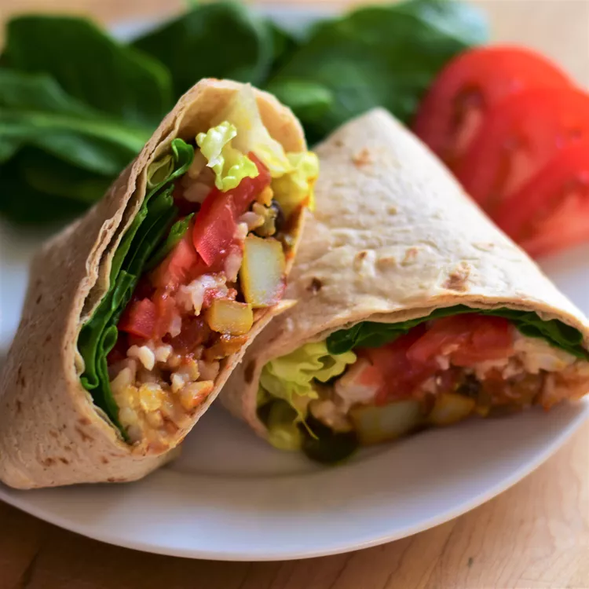

Vegan Burritos

Breathtaking vegan burritos
Mexican style burritos with vegan minced meat
Ingredients
- 250g vegan minced meat or tofu
- 1 packing of tortillas
- Green salad
- Cucumber
- Tomato
- Salsa sauce
- Vegan creamy cheese
- Vegan sprinkled cheese
- 1 can of corn
- 1 can of red kidney beans
- 1 can of chunky tomatoes
- 2 pieces of garlic
- 1/2 teaspoon of chili powder
- 1/2 teaspoon of black pepper
- 1 teaspoon of sweet pepper powder
- 1/2 teaspoon of ceylon cinnamon
- 3 teaspoons of olive oil
- 2 teaspoons of salt
- 1 teaspoon of cumin
- 1/2 teaspoons of oregano powder
- 1 teaspoon of basil powder
- Optional: A little bit of dark chocolate as the special ingredient. Just try it out!
Directions
- Cut the garlic in little slices. Use pan to sauté in olive oil until it gets brown. Add vegan minced meat and fry for about 5 minutes.
- Add the chunky tomatos, corn and beans aswell as the spices. Cook for about 10 minutes and do a taste check in the end. Add the chocolate so it can melt and give it the magical taset.
- During the cooking clean the salad, cucumber and tomatoes. Chop it down in little pieces so it is easier to roll the tortillas.
- Put the tortillas on plates and use as much salsa, creamy cheese and sprinkled cheese as you like. Add the freshly cooked chili and the chopped vegetables.
- Roll your tortillas together.
- ENJOY